1. Estados de Agregación de la Materia
Sólido · Líquido · Gas — balance entre EC y FIM, efecto de P y T
⚡ Energía Cinética (EC) vs Fuerzas Intermoleculares (FIM)
El estado de agregación de una sustancia pura depende del balance competitivo entre:
- Energía cinética (EC): proporcional a la temperatura (T). A mayor T, las moléculas se mueven más vigorosamente y tienden a separarse.
- Fuerzas intermoleculares (FIM): fuerzas de atracción entre moléculas (puentes H, dipolo-dipolo, fuerzas de London). Mantienen las moléculas unidas. Se favorecen a alta presión.
Temperatura: Aumentar T → aumenta EC → favorece transiciones Sólido → Líquido → Gas.
Presión: Aumentar P → fuerza moléculas juntas → favorece fases más densas Gas → Líquido → Sólido.
📊 Tabla Comparativa de los Estados de Agregación
| Propiedad | Sólido | Líquido | Gas |
|---|---|---|---|
| Forma | Definida y rígida | Indefinida (adopta recipiente) | Indefinida (ocupa todo) |
| Volumen | Definido | Definido | Indefinido (expansible) |
| Compresibilidad | Muy baja | Baja | Alta |
| Orden molecular | Alto (cristalino) | Bajo (desorden local) | Muy bajo (caótico) |
| Movimiento partículas | Vibración en posiciones fijas | Deslizamiento, flujo | Movimiento libre y rápido |
| Distancia intermolecular | Corta (contacto) | Corta-media | Grande |
| EC vs FIM | FIM ≫ EC | FIM ≈ EC | EC ≫ FIM |
| Densidad | Alta | Media-alta | Muy baja |
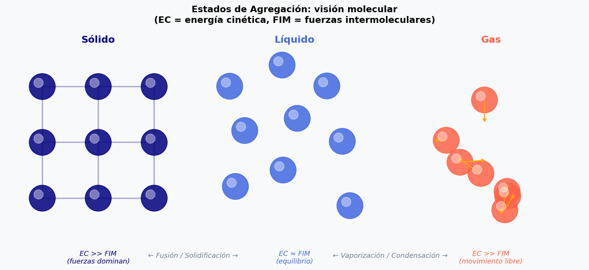
Representación molecular: sólido (red ordenada), líquido (móvil pero compacto), gas (libre con velocidades aleatorias)
🔬 Applet 1A — Simulador Molecular: EC vs FIM
⚖️ Applet 1B — Balance EC vs FIM (gauge)
❓ Preguntas de Comprensión — Tema 1
- ¿Por qué al aumentar la presión una sustancia tiende a pasar a fases más densas?
- Un sólido se calienta manteniendo la presión constante. Describe a nivel molecular los cambios que ocurren durante la fusión.
- ¿Por qué los gases son mucho más compresibles que los sólidos y líquidos?
- Tres sustancias A, B y C son líquidas a −10°C con puntos de ebullición normales 110,6°C; −0,5°C y 78,3°C respectivamente. ¿Cuál es más volátil? ¿Cuál tiene FIM más intensas?
2. Presión de Vapor, Ebullición y Volatilidad
Equilibrio líquido-vapor · Clausius-Clapeyron · Punto de ebullición normal
💨 Presión de Vapor (Pv)
En un recipiente cerrado, algunas moléculas del líquido con suficiente EC escapan a la fase gaseosa (evaporación). Simultáneamente, moléculas de gas vuelven al líquido (condensación). Cuando ambas velocidades se igualan, se alcanza el equilibrio dinámico.
- Aumenta con la temperatura (más moléculas con EC suficiente para escapar).
- Disminuye si las FIM son más intensas (más difícil escapar).
- Alta volatilidad ↔ alta Pv ↔ bajo punto de ebullición ↔ FIM débiles.
🌡️ Punto de Ebullición Normal
Definición: temperatura a la cual la presión de vapor del líquido iguala la presión externa (Pext = 1 atm).
📐 Ecuación de Clausius-Clapeyron
Describe cuantitativamente la dependencia de la presión de vapor con la temperatura:
donde ΔHvap es la entalpía de vaporización (J/mol) y R = 8.314 J/(mol·K).
Un gráfico de ln(Pv) vs 1/T da una recta de pendiente −ΔHvap/R.
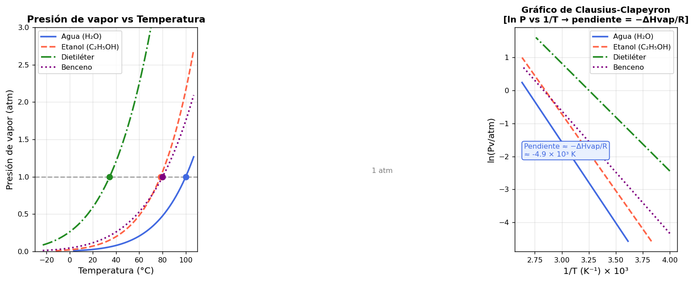
Izquierda: Pv vs T para distintas sustancias. La intersección con P=1 atm da el PE normal. Derecha: gráfico linealizado — pendiente = −ΔHvap/R
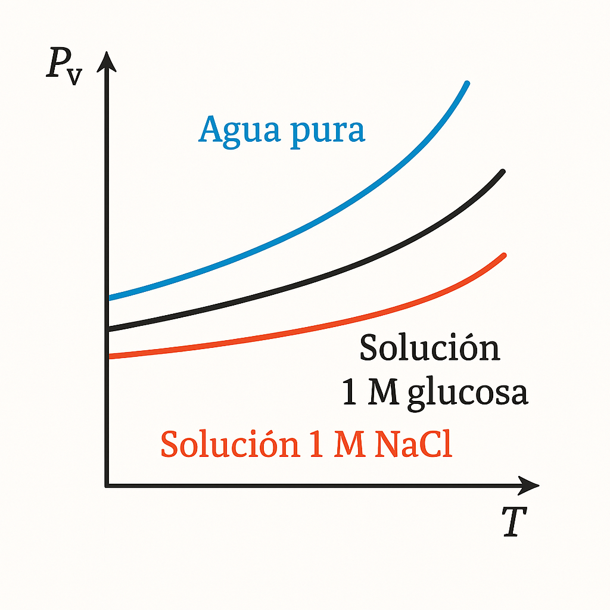
Agua pura vs solución glucosa 1M vs solución NaCl 1M. Orden de Pv: agua pura > glucosa > NaCl (mayor disminución por mayor n° de partículas)
🧪 Applet 2A — Calculadora de Presión de Vapor
📈 Applet 2B — Efecto de Pext sobre el Punto de Ebullición
❓ Preguntas de Comprensión — Tema 2
- ¿Por qué la presión de vapor aumenta con la temperatura? Explica a nivel molecular.
- Usando la ecuación de Clausius-Clapeyron, calcula la presión de vapor del agua a 80°C sabiendo que Pv(100°C) = 1 atm y ΔHvap = 40700 J/mol.
- ¿En qué altitud hierve el agua a 85°C? (Usa la ecuación C-C con los datos del agua.)
- Tres sustancias tienen ΔHvap de 25, 40 y 55 kJ/mol. ¿Cuál tiene mayor pendiente en el gráfico ln(Pv) vs 1/T? ¿Cuál tiene FIM más intensas?
- Justifica por qué el agua tiene un punto de ebullición anormalmente alto para su masa molar (18 g/mol).
3. Diagramas de Fases
Curvas S-L, L-G, S-G · Punto triple y crítico · H₂O vs CO₂
🗺️ Qué es un Diagrama de Fases
Un diagrama de fases es un mapa P-T que muestra las fases estables (S, L, G) de una sustancia pura y los equilibrios entre ellas. Cada punto del plano P-T indica cuál fase es estable bajo esas condiciones.
| Curva / Punto | Significado | Condición |
|---|---|---|
| Curva S-L (fusión) | S y L en equilibrio | Tf a cada P |
| Curva L-G (vaporización) | L y G en equilibrio | Pv(T) del líquido |
| Curva S-G (sublimación) | S y G en equilibrio | Pv(T) del sólido |
| Punto Triple (PT) | S, L y G coexisten | Única (P,T) posible |
| Punto Crítico (PC) | Fin de la curva L-G | T>Tc, P>Pc: fluido supercrítico |
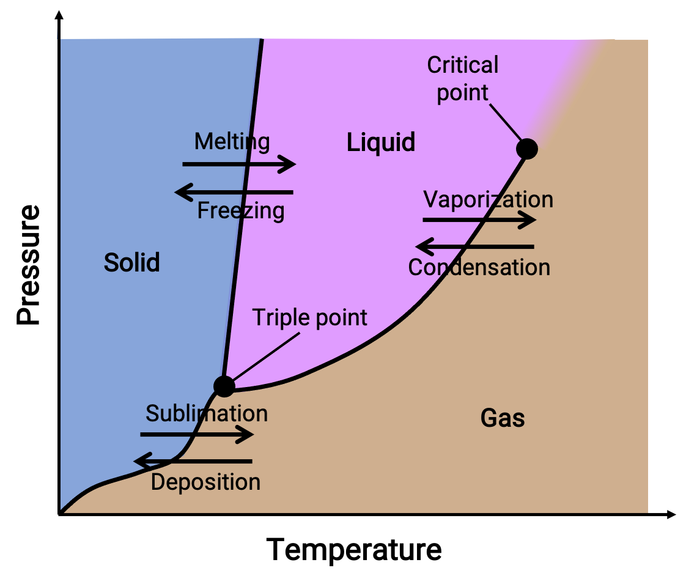
Diagrama genérico: regiones S, L, G; curvas de equilibrio; punto triple (S+L+G); punto crítico (fin de curva L-G); puntos normales a 1 atm
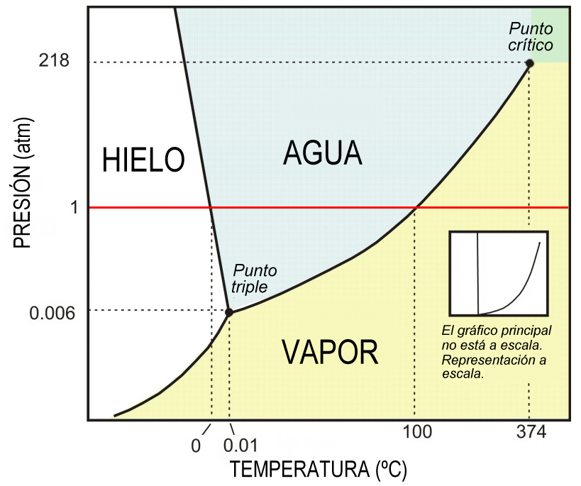
Diagrama de fases del H₂O. Nota la pendiente negativa de la curva S-L (anomalía: el hielo es menos denso que el agua). PT = (0.006 atm, 0.01°C)
🔄 H₂O vs CO₂ — Diferencias Clave
| Propiedad | H₂O | CO₂ |
|---|---|---|
| Pendiente curva S-L | Negativa (anomalía: hielo menos denso que agua) | Positiva (típico: sólido más denso) |
| Presión del Punto Triple | 0.006 atm (< 1 atm) | 5.11 atm (> 1 atm) |
| Temperatura del Punto Triple | 0.01°C | −56.6°C |
| A 1 atm y 25°C | Líquido | Gas |
| Comportamiento a 1 atm | Funde a 0°C, hierve a 100°C | Sublima a −78.5°C (nunca líquido a 1 atm) |
| Punto Crítico | 374°C, 218 atm | 31.1°C, 73.8 atm |
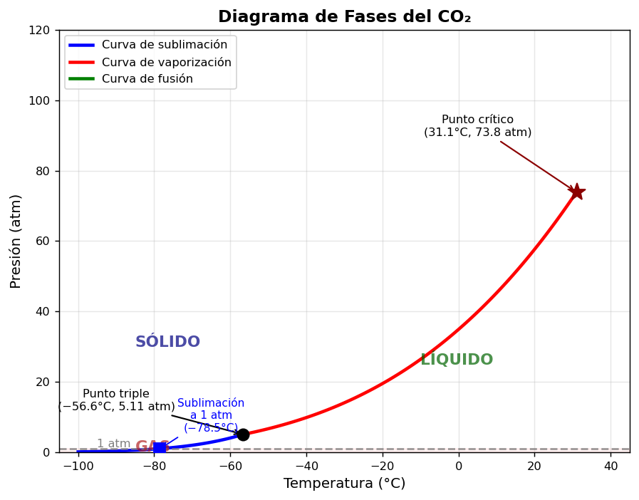
Diagrama de fases del CO₂: punto triple a 5.11 atm, punto crítico a 31.1°C/73.8 atm. A 1 atm solo existe sólido y gas (sublima a −78.5°C)
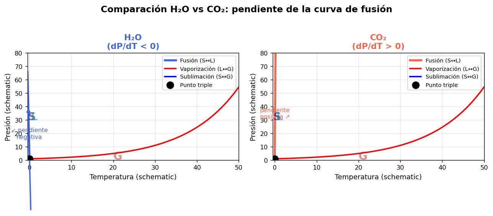
Comparación esquemática: H₂O tiene pendiente negativa en la curva S-L (fusión favorecida por presión), CO₂ tiene pendiente positiva (típico)
🗺️ Applet 3A — Explorador de Diagrama de Fases
🌡️ Applet 3B — Trayectoria a Presión Constante
❓ Preguntas de Comprensión — Tema 3
- ¿Por qué el agua tiene pendiente negativa en la curva de fusión? ¿Qué consecuencia física importante tiene esta anomalía?
- ¿Por qué el CO₂ no puede ser líquido a 1 atm? Explica usando el concepto de punto triple.
- Describe las fases que atraviesa el H₂O al calentar de −30°C a 200°C a 1 atm. Repite para el CO₂.
- ¿Qué ocurre al comprimir CO₂ gas a 25°C hasta 100 atm? ¿Y a 50°C?
- ¿Qué es el fluido supercrítico? Menciona una aplicación tecnológica del CO₂ supercrítico.
- Explica por qué se puede patinar sobre hielo: ¿está relacionado con la anomalía de la curva S-L del agua? (Debate actual en la literatura científica.)
4. Propiedades Coligativas — No Electrolitos
Descenso Pv · Ebulloscopía · Crioscopía · Presión Osmótica
🧂 Definición y Origen
Propiedades coligativas: propiedades de las soluciones que dependen únicamente del número relativo de partículas de soluto disuelto (no de su identidad química), para soluto no volátil.
ΔP = P°·xB
ΔTe = Ke·m
ΔTf = Kf·m
π = CRT
📉 Ley de Raoult y Descenso de Presión de Vapor
El soluto no volátil ocupa lugares en la superficie del líquido y reduce la probabilidad de evaporación de las moléculas de solvente. A mayor concentración de soluto (mayor xB), mayor descenso de Pv.
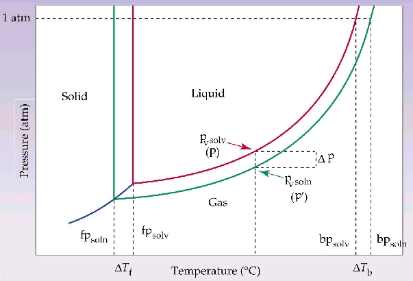
Efecto del soluto sobre el diagrama de fases: la curva L-G baja (descenso Pv), el punto triple se desplaza, resultando en ascenso ebulloscópico ΔTe y descenso crioscópico ΔTf
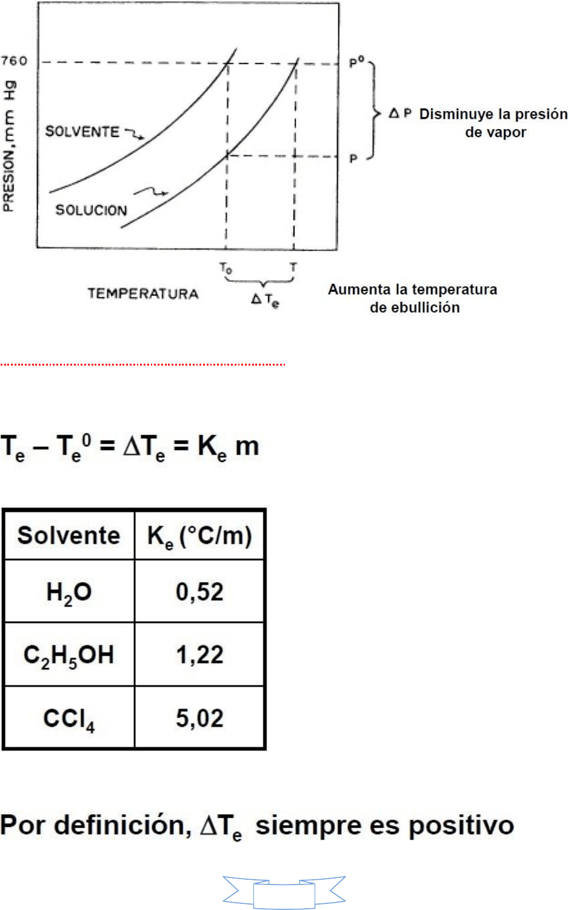
Pv vs T para agua pura y solución: la curva de la solución está por debajo. A 1 atm: Te > 100°C (ascenso) y Tf < 0°C (descenso)
🌡️ Ebulloscopía y Crioscopía
Ke(H₂O) = 0.512 °C·kg/mol
Kf(H₂O) = 1.853 °C·kg/mol
🫧 Presión Osmótica
Ósmosis: flujo neto espontáneo de solvente a través de una membrana semipermeable desde la solución más diluida hacia la más concentrada (o del solvente puro hacia la solución).
C = molaridad (mol/L); R = 0.08206 L·atm/(mol·K); T en Kelvin.
Presión osmótica: presión externa necesaria para detener el flujo neto de solvente.
concentrada
diluida
Membrana semipermeable: el solvente fluye hacia donde hay más soluto (hacia mayor concentración)
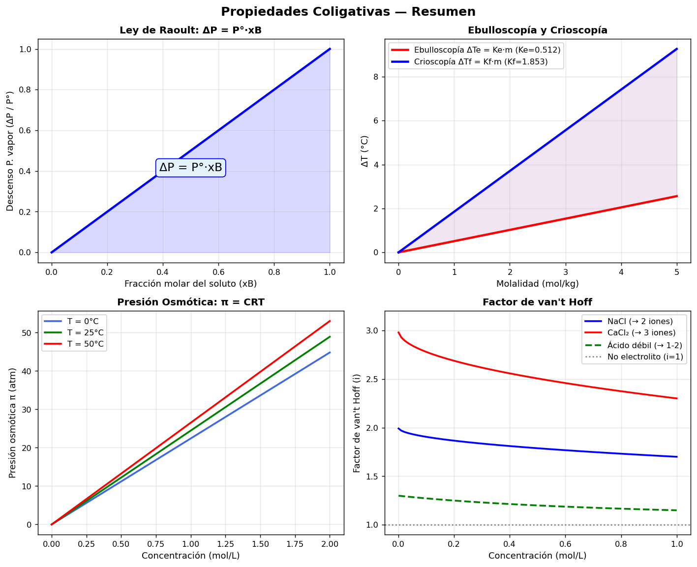
Panel 4: propiedades coligativas. Arriba: ΔP vs xB (Raoult), ΔTe/ΔTf vs molalidad. Abajo: presión osmótica vs C, factor de van't Hoff vs concentración
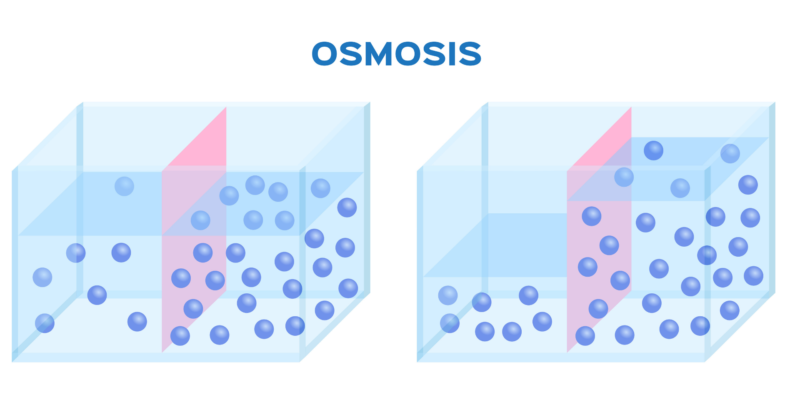
Diagrama de ósmosis: el nivel del líquido sube del lado de la solución concentrada. La diferencia de nivel corresponde a la presión osmótica π
🧮 Applet 4A — Calculadora ΔP, ΔTe, ΔTf
🫧 Applet 4B — Presión Osmótica
❓ Preguntas y Problemas — Tema 4
- ¿Por qué se usa molalidad (no molaridad) en las fórmulas de ebulloscopía y crioscopía?
- Problema: Calcula el punto de congelación de una solución que contiene 15 g de glucosa (MM=180 g/mol) en 250 g de agua (Kf=1.853 °C·kg/mol).
- Problema: Se disuelven 2 g de una sustancia desconocida en 100 g de benceno. El descenso crioscópico es 1.28°C. Si Kf(benceno)=5.12°C·kg/mol, ¿cuál es la masa molar del soluto?
- Problema: Calcula la presión osmótica a 37°C de una solución de glucosa 0.001 M (concentración sanguínea aproximada de glucosa adicional en diabetes). ¿Es detectable?
- ¿Por qué se usa anticongelante (etilenglicol) en los radiadores de automóviles? ¿Qué propiedad coligativa explica su efecto en invierno y en verano?
- Explica el mecanismo de la sal en las calles para derretir el hielo. ¿Por qué CaCl₂ es más efectivo que NaCl en moles iguales?
5. Factor de van't Hoff — Electrolitos
Disociación iónica · Factor i · Grado de disociación α
⚡ El Problema con los Electrolitos
Los electrolitos (ácidos, bases, sales) se disocian en iones en solución, aumentando el número real de partículas disueltas por mol de soluto. Las propiedades coligativas medidas son mayores de lo esperado para no electrolitos.
🔢 Factor de van't Hoff (i)
El factor i corrige las fórmulas de propiedades coligativas para electrolitos:
| Soluto | Disociación | ν (teórico) | i experimental |
|---|---|---|---|
| Glucosa (no elec.) | No se disocia | 1 | ≈ 1.00 |
| NaCl | Na⁺ + Cl⁻ | 2 | 1.7 – 1.9 |
| CaCl₂ | Ca²⁺ + 2Cl⁻ | 3 | 2.5 – 2.8 |
| Na₂SO₄ | 2Na⁺ + SO₄²⁻ | 3 | 2.4 – 2.7 |
| Ácido débil HA | H⁺ + A⁻ (parcial) | 1-2 | 1 < i < 2 |
📐 Relación con el Grado de Disociación α
Para un electrolito AxBy → x Az+ + y Bz− con ν = x + y iones:
No disocia
i = 1
Disociación parcial
1 < i < ν
Disociación total
i = ν
Electrolitos fuertes (NaCl, HCl, NaOH) → α ≈ 1 en solución diluida. Electrolitos débiles (CH₃COOH, NH₃) → 0 < α < 1, depende de la concentración.
Panel inferior derecho: factor i vs concentración para NaCl, CaCl₂ y ácido débil. A dilución infinita i → ν; en concentrado i disminuye por interacciones iónicas
⚡ Applet 5A — Explorador del Factor i
🔬 Applet 5B — Grado de Disociación α
❓ Preguntas y Problemas — Tema 5
- ¿Por qué el factor i experimental de NaCl a 0.1 mol/kg es ≈ 1.87 y no exactamente 2? ¿Qué fenómeno causa esto?
- Problema: Una solución 0.05 m de un ácido débil HA tiene ΔTf = 0.105°C. Calcula i y el grado de disociación α (Kf(H₂O)=1.853).
- Problema: Compara el descenso crioscópico de soluciones 0.1 m de: glucosa, NaCl y CaCl₂. ¿Cuál da el mayor efecto?
- Problema: Una solución 0.2 m de Na₂SO₄ tiene i = 2.6. ¿Cuál es el grado de disociación? ¿Podría ser un electrolito fuerte ideal?
- ¿Por qué el CaCl₂ (ν=3) es más efectivo que el NaCl (ν=2) para el deshielo de calles por mol de sal aplicado? Calcula la diferencia en ΔTf para 0.1 mol/kg de cada uno asumiendo disociación completa.
- ¿Cómo determinarías experimentalmente si un electrolito está completamente o parcialmente disociado usando medidas de propiedades coligativas?
📋 Guía de Estudio — Seminario 9 Completa
1. Estados de Agregación
Conceptuales:
- ¿Cuáles son los tres estados principales de agregación? Describe las características macroscópicas de cada uno (forma, volumen, compresibilidad, orden molecular).
- ¿Cómo afecta un aumento de temperatura al estado de agregación de una sustancia? ¿Y un aumento de presión? Justifica en términos de EC y FIM.
- Tres sustancias son líquidas a −10°C. Sus puntos de ebullición normales son: A: 110.6°C, B: −0.5°C, C: 78.3°C. (a) ¿Cuál es más volátil? (b) ¿Cuál tiene FIM más intensas? (c) Ordena las tres por volatilidad y por intensidad de FIM.
- ¿Por qué los gases son compresibles pero los sólidos no? Explica a nivel molecular.
2. Presión de Vapor y Punto de Ebullición
Conceptuales:
- Define presión de vapor. ¿Por qué depende de la temperatura y de las FIM?
- ¿Qué ocurre molecularmente cuando un líquido alcanza el punto de ebullición?
- ¿Por qué el agua hierve a menos de 100°C en alturas elevadas? ¿A qué presión hierve el agua a 90°C? (Usa Clausius-Clapeyron con ΔHvap=40700 J/mol.)
Problemas numéricos:
- La presión de vapor del agua a 25°C es 0.0313 atm. Calcula la presión de vapor a 60°C. (ΔHvap=40700 J/mol, R=8.314 J/mol·K.)
- Dos líquidos A y B tienen puntos de ebullición 100°C y 60°C respectivamente. Si ΔHvap(A)=40700 J/mol y ΔHvap(B)=29000 J/mol, calcula la presión de vapor de cada uno a 80°C.
3. Diagramas de Fases
Conceptuales:
- ¿Qué información proporciona un diagrama de fases? Identifica y explica: curva de vaporización, curva de fusión, curva de sublimación, punto triple, punto crítico.
- ¿Por qué la curva S-L del agua tiene pendiente negativa mientras que la del CO₂ tiene pendiente positiva? ¿Qué propiedad estructural del hielo lo explica?
- ¿Por qué el CO₂ nunca puede ser líquido a 1 atm? Explica usando el punto triple. ¿Qué significa que el "hielo seco" sublime?
- ¿Qué es el fluido supercrítico? Menciona condiciones de T y P para el CO₂ supercrítico y una aplicación industrial.
Problemas de diagrama:
- Para el H₂O (PT: 0.01°C, 0.006 atm; PC: 374°C, 218 atm): (a) ¿En qué fase está a 25°C, 1 atm? (b) ¿Y a 200°C, 5 atm? (c) ¿Qué ocurre al comprimir gas de agua a 25°C? (d) Describe el calentamiento de hielo a −30°C a 1 atm hasta 200°C.
- Para el CO₂ (PT: −56.6°C, 5.11 atm; PC: 31.1°C, 73.8 atm): (a) ¿En qué fase está a 25°C, 1 atm? (b) ¿Y a −30°C, 50 atm? (c) ¿Qué ocurre al calentar CO₂ sólido a 1 atm? (d) ¿Puede existir CO₂ líquido a 25°C?
4. Propiedades Coligativas — No Electrolitos
Datos: H₂O: Ke=0.512°C·kg/mol, Kf=1.853°C·kg/mol, Pv(25°C)=0.0313 atm. R=0.08206 L·atm/(mol·K).
- Explica cualitativamente por qué la presencia de un soluto no volátil disminuye la presión de vapor del solvente (Ley de Raoult).
- ¿Cómo el descenso de presión de vapor produce simultáneamente ascenso del PE y descenso del PF? Usa un diagrama de fases para tu explicación.
- Problema: 20 g de sacarosa (MM=342 g/mol) se disuelven en 200 g de agua. Calcula: (a) xB (fracción molar de sacarosa), (b) ΔP (descenso de Pv a 25°C), (c) ΔTe, (d) ΔTf, (e) π a 25°C.
- Problema: 3.85 g de azufre se disuelven en 100 g de CS₂ (Kf=3.83°C·kg/mol). El descenso crioscópico es 1.56°C. ¿Cuántos átomos de S tiene la molécula de azufre disuelto?
- Problema: La presión osmótica de una solución de hemoglobina (5 g en 100 mL a 25°C) es 1.73×10⁻³ atm. Calcula la masa molar de la hemoglobina.
- Problema: ¿Qué cantidad de anticongelante (etilenglicol, MM=62 g/mol, densidad=1.11 g/mL) se debe añadir a 5 L de agua para que la solución no congele hasta −20°C?
5. Factor de van't Hoff — Electrolitos
Datos: H₂O: Kf=1.853°C·kg/mol, Ke=0.512°C·kg/mol. R=0.08206 L·atm/(mol·K).
- ¿Qué es el factor de van't Hoff i? ¿Por qué i < ν para electrolitos concentrados?
- Deduce la relación i = 1 + α(ν − 1) a partir de la definición de α y ν. Verifica los casos límite α=0 y α=1.
- Problema: Una solución 0.1 m de NaCl tiene ΔTf=0.348°C. Calcula i y α para NaCl.
- Problema: Solución 0.1 m de ácido acético (HA, ν=2) en agua. ΔTf=0.188°C. (a) Calcula i; (b) Calcula α; (c) Si la constante de acidez Ka = α²·C/(1−α), estima Ka.
- Problema: Compara ΔTf de tres soluciones 0.05 m: (a) glucosa, (b) NaCl (i=1.9), (c) CaCl₂ (i=2.7). ¿Cuál congela más tarde?
- Problema: La presión osmótica de una solución 0.01 M de Na₂SO₄ a 27°C es 0.0738 atm. Calcula i y el grado de disociación α de Na₂SO₄ (ν=3).
- Aplicación: La solución de diálisis usada en nefrología debe ser isotónica con la sangre (π ≈ 7.7 atm a 37°C). ¿Qué concentración de NaCl (i≈1.8) se necesita?
📌 Formulario Resumen
Constante de gases: R=8.314 J/(mol·K) = 0.08206 L·atm/(mol·K)